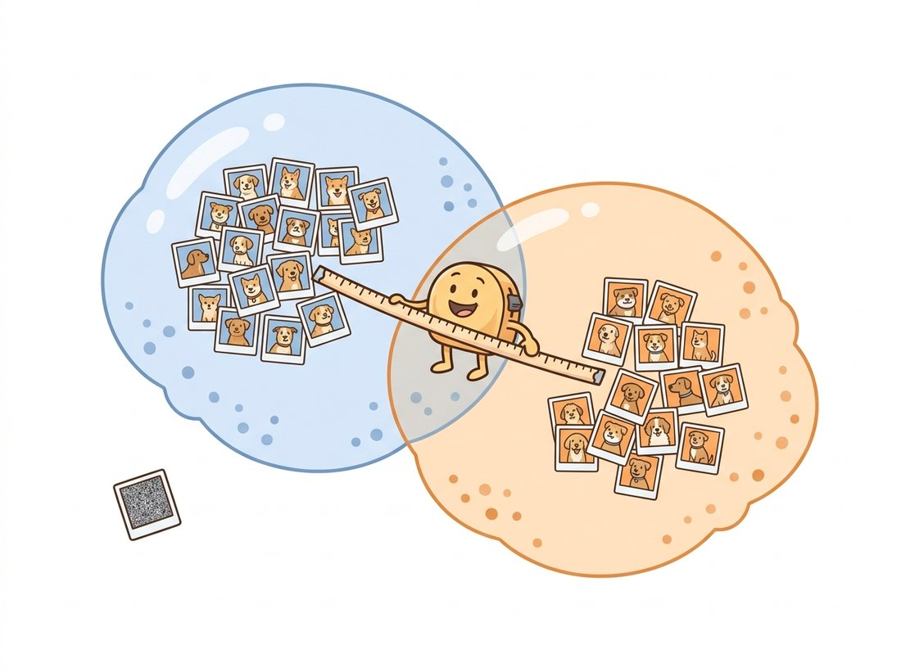

"My critic asked for a number. I do not have a number. I have a cloud of feature vectors and the strong opinion that it overlaps yours. Round that however you like."
An Inception Feature Extractor Refusing to Commit
Because a generated image has no reference image to compare against, generative evaluation abandons per-image error and instead measures the distance between the distribution of generated images and the distribution of real images in a learned feature space. Frechet Inception Distance fits a Gaussian to each cloud of features and measures how far apart they are; Kernel Inception Distance does the same comparison without the Gaussian assumption and with an unbiased small-sample estimator; precision and recall split the single distance into how realistic the samples are versus how much of the real variety they cover; and CLIPScore steps outside this family to ask the orthogonal question of whether an image matches the text that requested it. None of the four is sufficient alone, and this section builds each one so you understand exactly what it rewards and how it can be fooled.
In Chapter 1 you measured restoration quality with PSNR and SSIM, and in Chapter 23 you measured detection with mAP. Both share a hidden assumption: there is a correct answer to compare against. A generator producing a face that has never existed breaks that assumption completely. There is no "true" image for the model to be close to, so per-image error is meaningless. What we can ask instead is a population question: does the set of images this model produces look, statistically, like the set of real images we trained on? That reframing, from per-sample error to distribution distance, is the conceptual leap of this section, and it is the place where the histogram and statistics thread from Chapter 2 grows up into a distance between entire image distributions. As the illustration below dramatizes, a shippable generator faces not one verdict but four separate audits at once.
1. From Pixels to Features: Why Inception Beginner
Comparing distributions of raw pixels is hopeless: two images of the same dog differ in millions of pixel values, and a metric in pixel space would call them wildly dissimilar. The fix, established by the Inception Score and then FID, is to compare distributions not in pixel space but in the feature space of a pretrained classifier. Run every image through a network trained on ImageNet, take the activations from a late layer (the 2048-dimensional pooling layer of Inception-v3 is the historical standard), and you get a vector that encodes semantic content (object identity, texture, layout) while discarding the pixel-level noise that does not matter. Two photos of dogs land near each other in this space; a photo and a blob of static land far apart. Those learned features are the same kind of representation you studied in Chapter 25; here we borrow them as a measuring stick rather than a backbone to fine-tune. With no single reference image to compare against, quality becomes the distance between two clouds of features, as the illustration below pictures.

The code below extracts pooled Inception-v3 features for a batch of images, the common preprocessing step underneath everything in this section. Figure 37.1.1 is exactly what this function feeds: the two feature clouds.
import torch
import torchvision.transforms as T
from torchvision.models import inception_v3, Inception_V3_Weights
device = "cuda" if torch.cuda.is_available() else "cpu"
# Load Inception-v3 and strip the classifier so forward() returns the
# 2048-dim pooled feature vector used by FID/KID/precision-recall.
weights = Inception_V3_Weights.IMAGENET1K_V1
net = inception_v3(weights=weights, aux_logits=True).to(device).eval()
net.fc = torch.nn.Identity() # replace 1000-way head with a pass-through
prep = T.Compose([
T.Resize(342), T.CenterCrop(299), # Inception expects 299x299
T.ToTensor(),
T.Normalize([0.485, 0.456, 0.406], [0.229, 0.224, 0.225]),
])
@torch.no_grad()
def inception_features(images):
"""images: list of PIL.Image -> Tensor [N, 2048] of pooled features."""
batch = torch.stack([prep(im.convert("RGB")) for im in images]).to(device)
return net(batch).cpu() # [N, 2048]
Every metric in this family is only as good as the network producing the features. Inception-v3 was trained to classify ImageNet objects, so it is exquisitely sensitive to object identity and nearly blind to things ImageNet does not care about, such as fine facial geometry or the difference between two artistic styles. This is why FID computed on faces can disagree sharply with what humans see, and why the 2023 to 2025 trend (subsection 6) is to recompute these metrics on self-supervised features like DINOv2 that encode a richer notion of similarity. The number is a shadow of the feature space that casts it.
2. Frechet Inception Distance Intermediate
FID makes one modeling assumption: approximate each feature cloud as a single multivariate Gaussian, summarized by its mean vector and covariance matrix. Let the real features have mean $\mu_r$ and covariance $\Sigma_r$, and the generated features have mean $\mu_g$ and covariance $\Sigma_g$. The Frechet distance (also called the 2-Wasserstein distance) between two Gaussians has a closed form:
Here a covariance matrix $\Sigma$ records how each pair of feature dimensions varies together (its diagonal holds the per-dimension variances), and the trace $\operatorname{tr}(\cdot)$ is simply the sum of a matrix's diagonal entries. The first term penalizes a shift in the average feature (the generated images are, on average, a different kind of thing). The second term penalizes a mismatch in the spread and correlation structure (the generated images vary in the wrong ways). The matrix square root $(\Sigma_r \Sigma_g)^{1/2}$ is the only awkward piece; it is a real symmetric matrix square root, computed with an eigendecomposition or, in practice, the Schur-based scipy.linalg.sqrtm. Lower FID is better, and a perfect generator that exactly reproduces the real feature distribution scores zero. To see the two terms combine concretely, imagine the generated faces are shifted so their mean-feature vector sits a squared distance of $\lVert \mu_r - \mu_g \rVert_2^2 = 11.0$ from the real mean (the generator draws, on average, a slightly different kind of face), and the covariance-mismatch trace term works out to $7.4$ (the generated faces vary in subtly wrong ways): the two add to a final FID of $18.4$, the value the usage comment below prints. The implementation is a direct transcription of the formula.
import numpy as np
from scipy import linalg
def frechet_distance(feat_real, feat_gen):
"""feat_real, feat_gen: numpy arrays [N, D] of Inception features."""
mu_r, mu_g = feat_real.mean(0), feat_gen.mean(0)
# rowvar=False: each row is a sample, each column a feature dimension.
sig_r = np.cov(feat_real, rowvar=False)
sig_g = np.cov(feat_gen, rowvar=False)
diff = mu_r - mu_g
covmean, _ = linalg.sqrtm(sig_r @ sig_g, disp=False) # matrix square root
if np.iscomplexobj(covmean): # tiny imaginary parts from numerics
covmean = covmean.real
return float(diff @ diff + np.trace(sig_r + sig_g - 2 * covmean))
# Usage with the feature extractor from subsection 1:
# fr = inception_features(real_images).numpy()
# fg = inception_features(gen_images).numpy()
# print(f"FID = {frechet_distance(fr, fg):.2f}") # e.g. FID = 18.43
Two properties matter in practice and bite people who ignore them. First, FID is biased: the estimate decreases as you use more samples, so an FID computed on 5,000 images is not comparable to one computed on 50,000. The bias falls roughly as $O(1/N)$ in the number of generated samples $N$, which is why two models must be compared at the identical sample count and why Chong and Forsyth (2020) proposed $\mathrm{FID}_\infty$, extrapolating a line fit of FID against $1/N$ to its $N\to\infty$ intercept to recover an unbiased value. The field standardized on 50,000 generated images against the full real set for exactly this reason. Second, FID is acutely sensitive to the image preprocessing pipeline. As the clean-fid paper (Parmar et al., 2022) demonstrated, using PIL bicubic resizing versus a different library's resizing can shift FID by several points, enough to flip the ranking of two models. Always report which pipeline you used, or use a standardized library.
It is tempting to read FID like a grade, as if "FID 18" meant the images are 82 percent good and a lower number certified prettier pictures. In fact FID is a relative distance between two distributions, anchored to one specific real reference set and one specific feature extractor; the same generator scores a completely different FID against CelebA faces than against ImageNet, so an absolute value carries no meaning on its own and is only comparable within an identical evaluation setup. Worse, FID is a population statistic that averages over thousands of images, so it can sit comfortably low while individual samples contain glaring per-image defects: a sixth finger, two faces melted together, or text rendered as gibberish. A handful of broken images barely moves a pooled-feature mean and covariance. A low FID says "these images are, on average, distributed like the reference set in Inception's feature space"; it does not say "every image is correct" and it certainly does not say "humans will prefer them," which is exactly why subsection 6 and the human study of Section 37.2 exist.
The from-scratch versions in this section exist to show you the mechanics. In production you would never reimplement the matrix square root or the feature extraction. TorchMetrics handles the frozen Inception network, the running covariance accumulation, the bias-correction conventions, and device placement:
from torchmetrics.image.fid import FrechetInceptionDistance
fid = FrechetInceptionDistance(feature=2048, normalize=True)
fid.update(real_batch, real=True) # real_batch: [N,3,H,W] in [0,1]
fid.update(fake_batch, real=False)
print(fid.compute()) # scalar tensor, e.g. tensor(18.43)
This replaces roughly 40 lines of feature extraction and linear algebra with 4, and the library internally manages the streaming covariance so you never hold all features in memory at once. For cross-paper comparability, the clean-fid package additionally pins the exact resizing and JPEG handling.
3. Kernel Inception Distance: Dropping the Gaussian Intermediate
FID's Gaussian assumption is a convenience, not a truth; feature distributions are rarely Gaussian. Kernel Inception Distance (KID) replaces it with a squared maximum mean discrepancy (MMD) using a polynomial kernel, which compares all the moments of the two distributions implicitly without assuming any particular shape. For features $x$ from the real set and $y$ from the generated set, the kernel is $k(x, y) = \left(\tfrac{1}{d}\, x^\top y + 1\right)^3$, where $d$ is the feature dimension, and the squared MMD is:
The decisive practical advantage over FID is that the standard estimator is unbiased: it does not systematically drift with sample count, so KID gives trustworthy numbers on a few thousand images where FID would still be moving. That makes KID the right choice when generating 50,000 samples is expensive, such as evaluating a slow video or 3D generator. The unbiased estimator drops the diagonal self-comparisons, which is the one subtlety in the code.
def poly_kernel(a, b):
"""Cubic polynomial kernel between feature sets a [m,D] and b [n,D]."""
d = a.shape[1]
return (a @ b.T / d + 1.0) ** 3 # [m, n] kernel matrix
def kid(feat_real, feat_gen):
"""Unbiased squared-MMD estimate (lower is better)."""
m, n = len(feat_real), len(feat_gen)
k_xx = poly_kernel(feat_real, feat_real)
k_yy = poly_kernel(feat_gen, feat_gen)
k_xy = poly_kernel(feat_real, feat_gen)
# Unbiased term removes the diagonal (self-similarity) before averaging.
sum_xx = (k_xx.sum() - np.trace(k_xx)) / (m * (m - 1))
sum_yy = (k_yy.sum() - np.trace(k_yy)) / (n * (n - 1))
sum_xy = k_xy.sum() / (m * n)
return float(sum_xx + sum_yy - 2 * sum_xy)
# Reported KID values are tiny; papers usually print KID x 1000.
# print(f"KID = {kid(fr, fg) * 1000:.3f}") # e.g. KID = 1.742
Who: a four-person generative-video group at a media-tech startup, early 2025. Situation: they were comparing two text-to-video model checkpoints by computing per-frame FID against a real-video frame bank. Problem: sampling 50,000 frames from their diffusion video model took most of a day per checkpoint, so they had been computing FID on only 2,000 frames, and the rankings flipped run to run. They suspected randomness but could not tell signal from noise. Decision: they switched the headline metric to KID, whose unbiased estimator is stable at small sample sizes, and bootstrapped a confidence interval over feature subsets. Result: at 2,000 frames the KID gap between the two checkpoints was tight but its bootstrap interval excluded zero, giving them a defensible ranking that FID could not, at one-tenth the sampling cost. Lesson: when samples are expensive, the bias of FID is not a footnote; KID with a confidence interval is the honest choice, and reporting the interval matters as much as the point estimate.
4. Precision and Recall: Splitting Fidelity From Diversity Advanced
A single FID number hides a crucial ambiguity. A model can earn a mediocre FID two opposite ways: by producing a few flawless images that ignore most of the real distribution (high fidelity, low coverage, the classic GAN mode collapse from Chapter 32), or by producing a broad but blurry mess (low fidelity, high coverage, the classic VAE failure from Chapter 31). Improved precision and recall (Kynkaanniemi et al., 2019) disentangle these. The idea is geometric: estimate the real-data manifold (the region of feature space the real images actually occupy) as the union of small balls, one around each real feature, with radius equal to that point's distance to its $k$-th nearest real neighbor. Picturing it in two dimensions helps: drop a dot for every real feature, draw a small circle around each one sized to just reach its near neighbors, and the overlapping circles trace out the shape the real data covers; a generated point counts as "realistic" if it lands inside any of those circles. Then:
- Precision is the fraction of generated samples that fall inside the real manifold. It measures fidelity: are the generated images the kind of thing the real data contains?
- Recall is the fraction of real samples that fall inside the generated manifold. It measures coverage: does the generator reach all the variety the real data has?
Figure 37.1.2 makes the asymmetry visual: a mode-collapsed generator scores high precision and low recall, while an over-smoothed one does the reverse. The implementation builds the manifolds from k-nearest-neighbor radii and counts membership.
import torch
def knn_radii(feats, k=3):
"""Per-point radius = distance to its k-th nearest neighbor."""
d = torch.cdist(feats, feats) # pairwise distances
d.fill_diagonal_(float("inf")) # ignore self
return d.topk(k, largest=False).values[:, -1] # k-th smallest per row
def manifold_contains(manifold_feats, radii, query_feats):
"""Fraction of query points inside any ball of the manifold."""
d = torch.cdist(query_feats, manifold_feats) # [Q, M]
inside = (d <= radii.unsqueeze(0)).any(dim=1) # within some real ball?
return inside.float().mean().item()
def precision_recall(real, gen, k=3):
r_real, r_gen = knn_radii(real, k), knn_radii(gen, k)
precision = manifold_contains(real, r_real, gen) # gen inside real
recall = manifold_contains(gen, r_gen, real) # real inside gen
return precision, recall
# p, r = precision_recall(torch.tensor(fr), torch.tensor(fg))
# print(f"precision={p:.3f} recall={r:.3f}") # e.g. precision=0.78 recall=0.61
5. CLIPScore: Did the Image Match the Prompt? Intermediate
FID, KID, and precision-recall all measure whether generated images look like real images in general. For a text-to-image system from Chapter 34 that is only half the question; the other half is whether the image matches the specific prompt that asked for it. CLIPScore answers this by leaving the Inception family entirely and using the CLIP joint image-text embedding space you met in Chapter 25. Embed the image and the prompt with CLIP, and the cosine similarity between the two vectors, clamped at zero and scaled, is how well they agree:
The scaling constant $w = 2.5$ is a convention from the original paper that spreads scores into a readable range; it does not change rankings. Higher means better prompt alignment. The code uses the open_clip library to embed both modalities.
import torch, open_clip
model, _, preprocess = open_clip.create_model_and_transforms(
"ViT-B-32", pretrained="laion2b_s34b_b79k")
tokenizer = open_clip.get_tokenizer("ViT-B-32")
model = model.eval()
@torch.no_grad()
def clip_score(image, prompt, w=2.5):
"""image: PIL.Image, prompt: str -> CLIPScore (higher = better match)."""
img = preprocess(image).unsqueeze(0)
txt = tokenizer([prompt])
img_emb = model.encode_image(img)
txt_emb = model.encode_text(txt)
img_emb /= img_emb.norm(dim=-1, keepdim=True) # L2-normalize for cosine
txt_emb /= txt_emb.norm(dim=-1, keepdim=True)
cos = (img_emb * txt_emb).sum(-1).clamp(min=0)
return float(w * cos)
# clip_score(generated_image, "a red bicycle leaning on a brick wall")
# -> e.g. 0.81 (well-aligned prompts typically land around 0.7 to 0.9)
FID is the metric that gets cheaper the more you feed it: report it on 50,000 images and it looks great, report it on 5,000 and it looks even better, not because your model improved but because the bias quietly tightened its belt. It is the only number in this book that you can lower by working less, which is exactly why two papers quoting different sample counts are comparing nothing at all. Mnemonic for the whole section: FID assumes a bell, KID asks no questions, precision-recall files two separate reports, and CLIPScore reads the prompt.
A model can have excellent FID and poor CLIPScore (it produces beautiful, realistic images that ignore the prompt) or excellent CLIPScore and poor FID (it crams every requested object in but renders them crudely). Because the two metrics reward different and partly opposing behaviors, you report both and read them together. Optimizing one alone is how you get a model that games it: turning classifier-free guidance up hard usually raises CLIPScore while hurting FID and diversity, the exact tradeoff you tune in deployment.
You now have all four functions of this section (FID, KID, precision-recall, and CLIPScore) and they are more valuable assembled than scattered. As a roughly two-hour build, wrap them into a single evaluate(generator, real_loader, prompts) command-line tool that samples a batch of images, computes all four scores in one pass over a shared Inception feature extraction, and prints a compact report card: distribution distance, fidelity-versus-diversity split, and prompt alignment side by side, with a one-line verdict flagging which axis is weakest. Add a bootstrap confidence interval on KID (the trick from the video-team practical example) so the card reports uncertainty, not just a point estimate. This is exactly the internal evaluation harness a generative-model team runs on every checkpoint, and a clean version with a sample report on two public models is a genuinely interview-ready portfolio piece. Stretch it by swapping the Inception backbone for DINOv2 features (the research-frontier direction below) and showing how the ranking shifts.
6. What These Metrics Miss Advanced
Every metric here is a proxy, and proxies can be gamed. FID rewards matching ImageNet-flavored statistics, so a model can lower FID by producing slightly oversaturated, texture-rich images that Inception likes, regardless of whether humans prefer them. CLIPScore rewards literal object presence, so it scores a list-of-objects image higher than a more artful interpretation. None of them sees a sixth finger, a melted-together pair of faces, or text that reads as gibberish, because those failures barely move pooled-feature statistics. The decisive evidence that the metrics are imperfect is that they disagree with humans, which is why human evaluation in Section 37.2 remains the gold standard rather than a luxury.
The 2023 to 2025 literature has been actively dismantling the Inception-feature assumption. Stein et al. (2023, arXiv:2306.04675) ran a large human study and showed that FID computed on Inception-v3 features misranks modern diffusion models relative to human preference, while FID on self-supervised DINOv2 features (Chapter 25) aligns far better; "FD-DINOv2" is now a common companion metric. Other lines of work include the geometric coverage metric of Naeem et al. (Density and Coverage, 2020) that hardens precision-recall against outliers, and learned perceptual preference predictors such as ImageReward (Xu et al., 2023, arXiv:2304.05977) and PickScore (Kirstain et al., 2023, arXiv:2305.01569) that are trained directly on human preference data and now serve as both evaluation metrics and reward signals for preference-tuning generators. The trajectory is clear: as generators improve, evaluation moves from ImageNet statistics toward features and predictors that were themselves trained to track human judgment.
FID decreases as you use more samples, while the unbiased KID estimator does not. In two or three sentences, explain why this makes it invalid to compare a paper's reported FID-on-10k against your own FID-on-50k, and describe a concrete situation in which an unwary reader would conclude the wrong model is better. Then state which single line of the FID code (subsection 2) would have to change if you wanted to add a bias correction, and why a clean fix is not trivial.
Take any dataset of real images and create two fake "generators": one that returns the same five real images repeated (severe mode collapse), and one that returns all real images with heavy Gaussian blur (over-smoothing). Using the precision_recall function from subsection 4 on Inception features, confirm that the first scores high precision and very low recall while the second scores the reverse. Then compute FID for both and verify that FID alone fails to distinguish the two failure modes clearly.
Using a diffusers text-to-image pipeline (or precomputed images at several guidance scales if you lack a GPU), generate images for a fixed set of 50 prompts at classifier-free guidance scales 1, 3, 7, and 15. Compute FID against a real reference set and the mean CLIPScore at each scale. Plot both curves against guidance scale, identify the crossover region where rising CLIPScore starts costing FID, and write one paragraph connecting this tradeoff to the diversity-versus-fidelity discussion in Chapter 33.